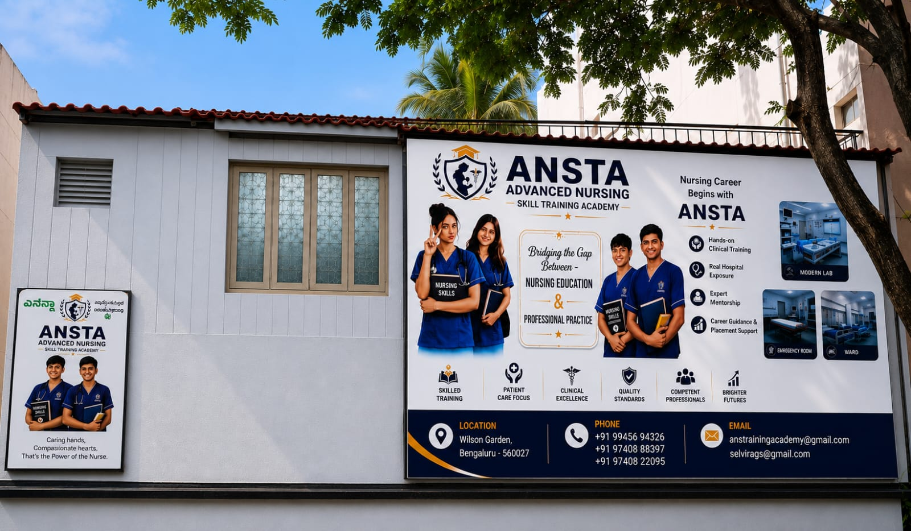
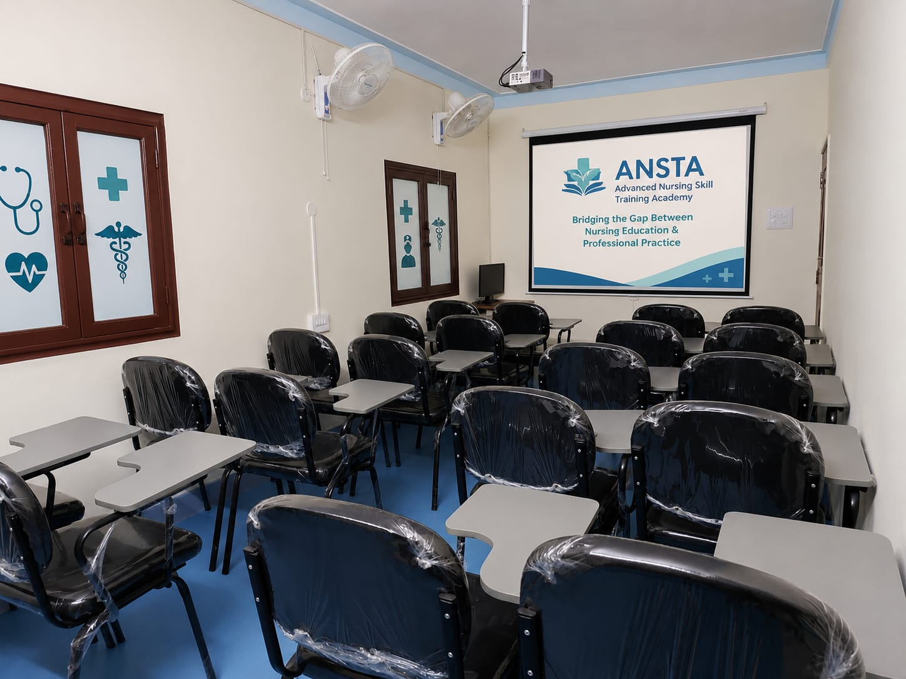
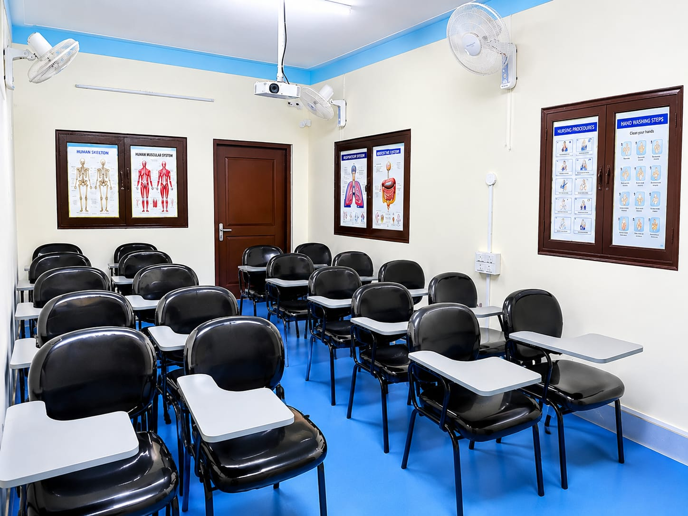
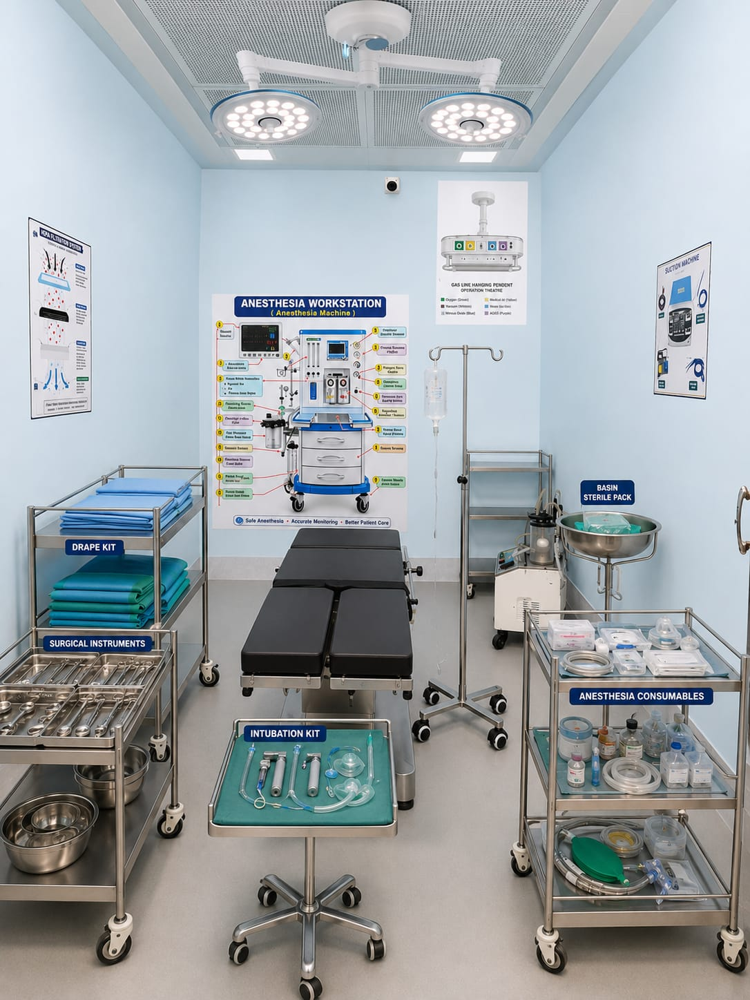

Transform your nursing knowledge into real clinical competence through structured classroom learning, simulation-based skill training, and hands-on hospital internships — guided by experienced clinical trainers.
30+
Years faculty experience
5
Clinical programs
100%
Supervised internship
Small
Batch sizes
Patient assessment, vitals, medication administration, infection control and ward procedures.
View course 3 MonthsICU monitoring, ventilator basics, ABG introduction, critical-care nursing and Code Blue response.
View course 3 MonthsSterile technique, scrubbing, gowning & gloving, instrument handling and the WHO safety checklist.
View course 2 MonthsTriage, primary assessment, BLS, trauma care, ECG basics and shock management.
View course 6 Months · 10th passBasic nursing care, hygiene, elderly care, ward procedures and a full clinical internship.
View courseOur simulation lab is a safe place to fail before it matters. You practise every skill on real equipment, then perform it under supervision on live hospital floors.
01
Interactive classroom sessions and case-based discussions build the theory.
02
Simulation-based skill training and demonstrations on real equipment.
03
Supervised clinical practice on live hospital floors across departments.
04
Daily evaluation and a final competency assessment you can show employers.



